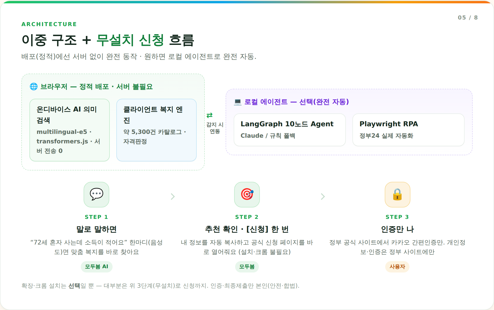
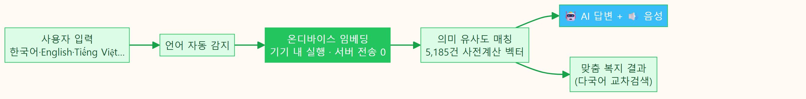
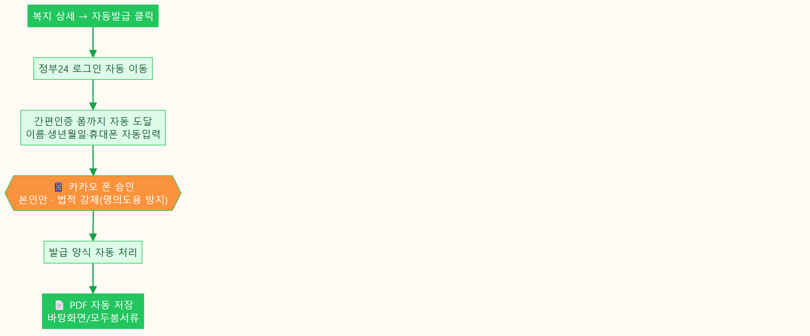
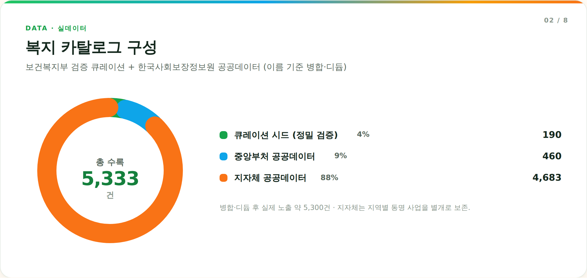
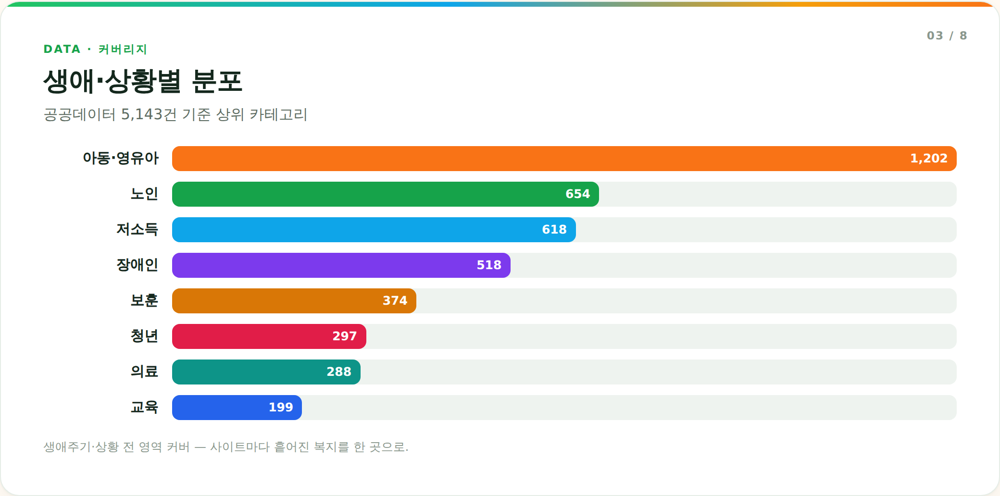

나이·소득·상황(또는 어떤 언어의 한 문장)만 알려주면, 브라우저에서 직접 도는 AI가 전국 5,000여 복지에서 내게 맞는 혜택을 찾아 신청·발급까지 이어주는 개인 복지 AI Agent.
| 입력 | AI가 찾은 복지 |
|---|---|
| "노인인데 돈이 없어요" | 기초연금·노인일자리 |
| "I lost my job…" (영어) | 긴급복지·국민취업지원 |
| "Tôi là người khuyết tật" (베트남어) | 장애인연금·발달재활 |
| "혼자 아이를 키워요" | 부모급여·한부모 양육비 |





| 대회 키워드 | 모두봄의 구현 |
|---|---|
| AI Agent | LangGraph 10노드 에이전트 + 온디바이스 AI + RPA 자동 수행 |
| 라이프스타일 혁신 | 복지 사각지대 해소 — 정보 격차·언어 장벽·신청 장벽 제거 |
| SW 완성도 | 정적 배포로 즉시 체험 + 실제 정부 자동화 + 품질게이트(테스트 168/13) |
라이브: https://biocode67.github.io/modoo-bom/ · 정직성 원칙: 가짜 데이터·자동화 과장 없음, 본인인증은 법적 강제로 사용자 직접